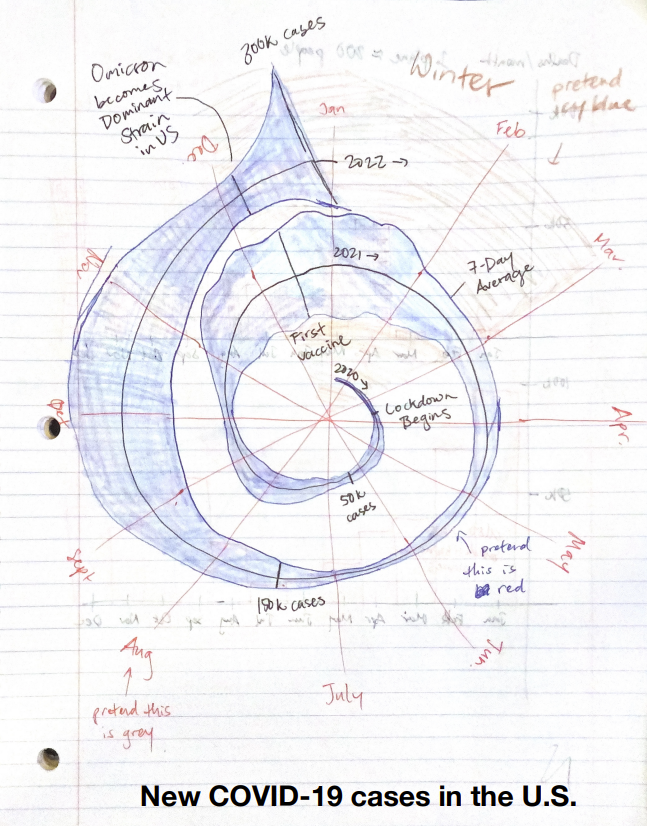
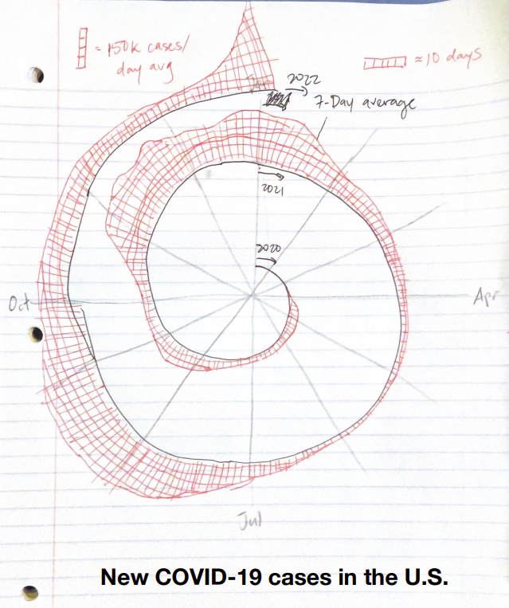
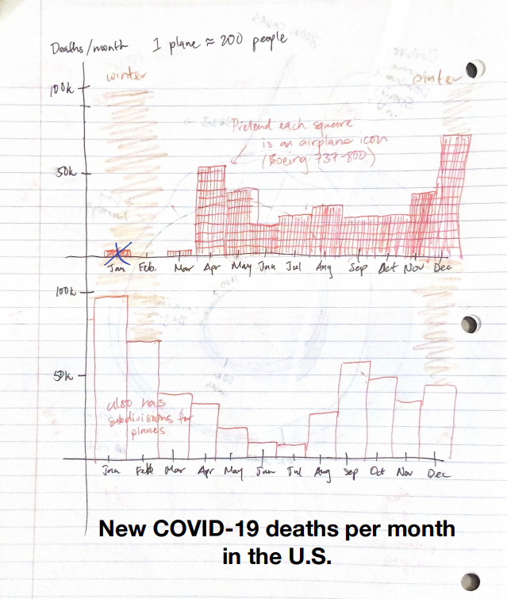

Reading & Critique

Insights about the data/visualization:
- Case counting began in March 2020, but case numbers remained low until a noticeable uptick in April.
- Initially, cases declined—possibly due to the shutdown—but then increased again by June and July 2020.
- There was a significant surge during the winter of 2021, suggesting that COVID-19 spread more easily in colder months.
- In Fall 2021, there was a smaller, yet sustained, increase in cases.
- In January 2022, cases rose with an extreme exponential spike, corresponding to the spread of the Omicron variant.
Design Critique:
The cyclic nature of this visualization is very helpful for comparing the data with the same month one year ago, especially because viruses spread much faster during wintertime conditions. It also allows for a more compact representation of the data without condensing it past the point of readability. Shading in the area representing the number of cases increases the visual impact of large regions to better emphasize them to the reader. The choice of red also reinforces the danger that it represents, since red has negative connotations in Western cultures (and this article is directed towards a US audience). The explosion in cases in January--which is largely the subject of this article--is easy to see, understand, and compare to other months. It's also helpful that the spiral's "length per month" increases with time, so that more recent (and therefore relevant) months are easier to analyze.
However, I do think that the visualization is not as effective as it could be. By using a symmetric red band to show case count, rather than a one-sided strip, it makes comparing widths more difficult. My brain is only able to parse one side of the strip at a time, so I'm only able to use half the shaded area to differentiate between case counts. This mental partitioning also makes it much more difficult to apply the key's scaling, and I almost resorted to using my finger width instead. It might also help if the key showed different sized rectangles for discrete intervals, rather than a continuous triangle, because the case count is locally flat enough that it looks more rectangular than triangular. In addition, the curvature of the spiral somewhat distorts the rates of increase of case counts, because our brain has to differentiate between the baseline's curve and any curve coming from changing case counts. The visualization could also be more expressive by prompting the reader to make connections between the data and real world events. There is relatively little information in this relatively large visualization, and it could easily be annotated with the start of lockdown or when the Omicron strain started to dominate. The visual could also highlight winter as a particular time period to monitor and compare with other seasons. The spiral's changing "length per month" also could over-emphasize that there were fewer cases in 2020 than in 2021, because the total area representing that area is so much smaller than the total area representing 2021's cases. If the cases were represented with two identical circles, more accurate comparisons could be made, but we would also lose some ease of comparison between months.
Visualization Sketches

Design Rationale for Sketch 1:
- I wanted to communicate more information in this visualization, to help orient the viewer as to what was happening during any given time period.
- I also highlighted winter to emphasize that environmental conditions can make infection spread more quickly.
- I labelled all months, not just four, because during this time many people were so familiar with case counts that they could associate specific months with specific conditions.
- Finally, I moved the legend onto the visual itself so that it can be more easily compared to the actual data.
Reflection for Sketch 1:
- Just trying to redraw the original visual, I was very annoyed by how difficult it was to replicate, because I couldn't easily gauge the width of a given section. I'd like to address that in a future sketch.
- I did a double take for a second when looking at the "7-day average" label, and thought for a second that it was a weekly count rather than daily count. Slightly stupid of me, but this could be made a bit more explicit.

Design Rationale for Sketch 2:
- I wanted to better emphasize the changes in case counts and eliminate the visual impairment of a centered baseline.
- I also wanted to make the relative heights/widths easier to quantify by adding a grid.
Reflection for Sketch 2:
- Again, it was difficult to copy the original visualization and get the scaling correct because of how difficult it is to gauge case counts with the centered baseline.
- I'm glad that some of the increases felt much more dramatic, although that might have been my poor artistic skills.
- The key is a bit harder to explain here--it might need reworking.

Design Rationale for Sketch 3:
- I wanted to increase the emotional impact of the visualization, because I remember slowly becoming numb to the COVID tracking, and often thinking "ok but for most people's cases it's just a cold." Death counts feel much more impactful.
- I also found myself becoming numb to the scale of the numbers, so I put it in terms of more tangible units (like airplanes) in order to drive home how large the number is. A crashed plane with no survivors makes world news, but during COVID hundreds of planes worth of people were dying every month.
- I switched to a bar plot to see if it felt more expressive than the original visualization and didn't distort the data as much. I stacked 2020 and 2021 to try to preserve the comparisons between months.
Reflection for Sketch 3:
- It was actually pretty tricky to come up with a unit of people that was both relatively consistent in number, common enough that everyone can conceptualize it, and at the right scale to depict in this plot. I thought about using classrooms, or football teams, or even the MIT student population, but they were all either too emotionally tied to one thing, hard to conceptualize, or at the wrong scale.
- The deaths numbers are also a little less telling about the future, especially because hospital loads have such a large impact. You can't yet see the omicron explosion in the death counts.
- Seeing that there's really only two years' worth of data per month (or even just one), the May 2020 - May 2021 comparison feels less crucial.
Final Visualization Design

Final Writeup
The primary message that I aim to convey in this visualization is that the impact that COVID-19 had on the United States varied widely over time for many different reasons, but overall still had a devastating impact. I included the daily cases to communicate what the article's original visualization did--that the Omicron strain was more widely infectious. However, I also included the deaths to address the article's other main point, which was that Omicron was less deadly than previous variants, as the spike in deaths during the Omicron wave is actually smaller than previous spikes. In addition to this observation, I also wanted to increase the emotional impact of the visualization by using a similar technique as my last sketch. Deaths are much more weighty than cases, and using widely understood units such as planes gives a better sense of the scale of the pandemic. I also chose to include annotations providing context, as in my other previous sketches. This makes it easier for readers to make connections to Omicron's impact specifically, or to the effect of wintertime conditions.
I chose an airplane icon as my visual encoding for deaths because I wanted a unit that is relatively consistent, emotionally impactful, and scalewise appropriate. If the units were too small, they would no longer be helpful in making the numbers more tangible, and if they were too large, are brains might lose track of the scale of the units themselves. I also didn't want to use an icon that would subonsciously imply incorrect correlations. For example, I didn't use schools because young people were so much less likely to die from COVID, and I didn't use football stadiums because they're associated with entertainment, and are a bit too light for this serious context. Planes are especially appropriate because plane crashes so often make the news, and losing every passenger is widely regarded as a disaster. This puts the deaths into a more impactful perspective. I did run into issues with getting the right size of the plane icons--choosing to bin by week maximized the usage of space, given the square shape of the icons. Ideally, the units I used would have been slightly larger (on the order of ~1000 deaths/unit) so that the icons would be larger (making them easier to see) and less numerous (making the number of icons feel more tangible), but overall this seemed the best balance of qualities. The larger and more visually varied nature of the stacked planes draws already the reader's attention quite strongly, so I chose to preserve the original visualization's use of shading underneath the curve and of red for cases to partially offset this effect. It would also feel too flippant to color the planes red for shock value. I did choose to unwrap the spiral of the original visualization, as I felt that the distortion of both magnitude and change was not worth the month-wise comparisons and slightly more compact form. For the annotations, I chose a smaller font and less vibrant colors so as not to distract from the data. The icy blue shading for winter was particularly chosen because of its associations with snow and wintertime. also made sure to label the y-axis of the deaths plot with the actual numbers of deaths, so that even without the detail of the planes, the height of the stack functioned like a bar chart. I at first debated putting both cases and deaths on the same plot, but because their scales are so different (and dual-axis plots can be confusing), I decided to separate them. This does unfortunately make it more difficult to compare between the two and search for relationships.